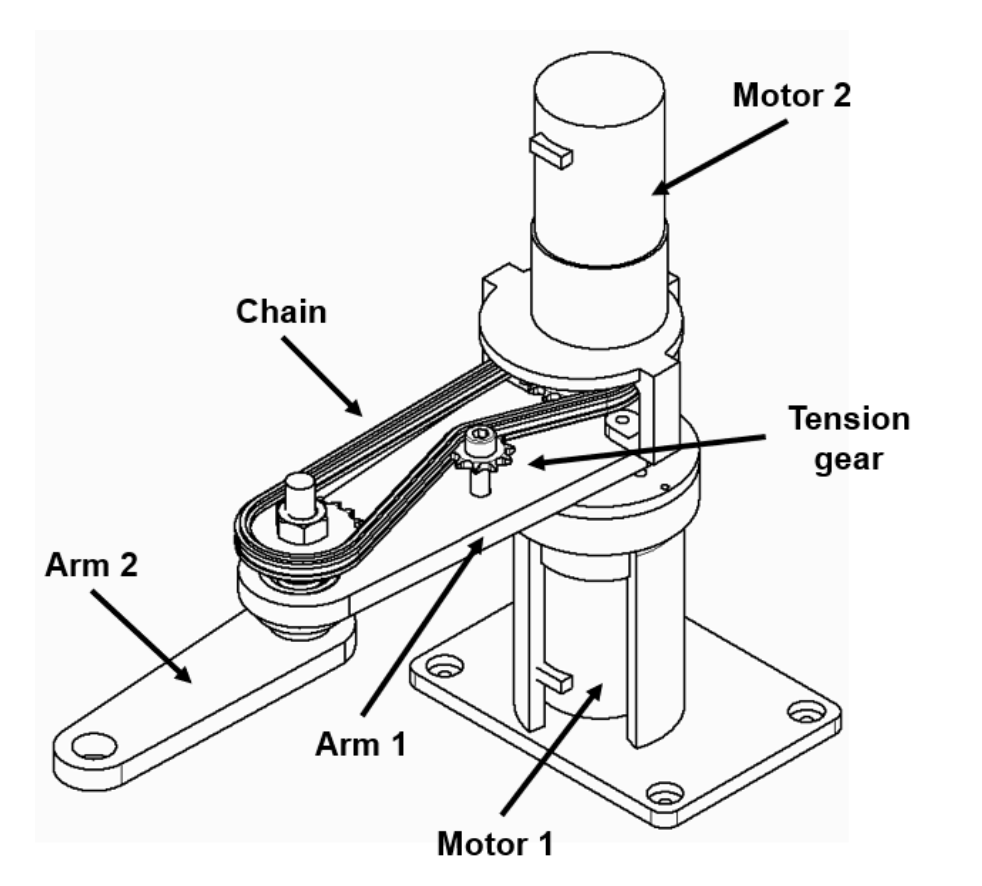
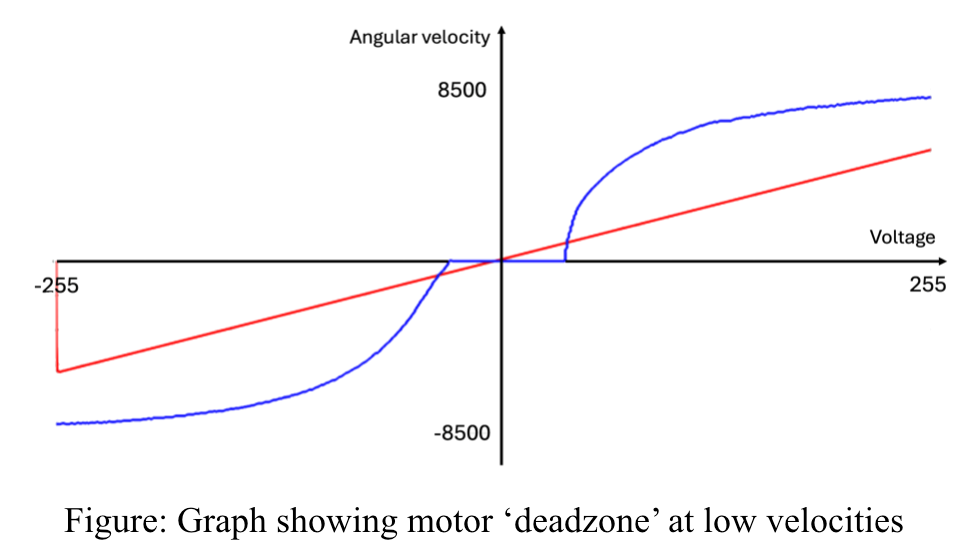
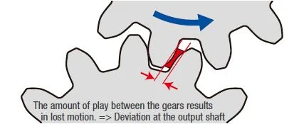
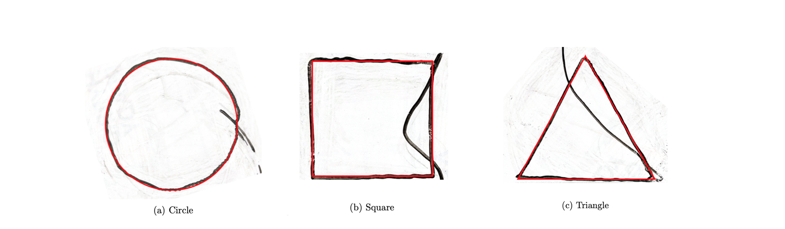

Dynamics and Advanced Control: 2-DOF Robot Arm
System Design
A two-degree-of-freedom robotic arm was designed to accurately draw geometric shapes. The arm lengths were optimised to minimise the jerk experienced by the motors (third derivative of motor angle), resulting in smoother changes in tip velocity. The motor driving the second arm was moved out of axis with a chain to reduce the moment of inertia of the robot arm improving controllability.
Signal Conditioning
The target x-y paths were converted into motor angles with inverse kinematics. High-resolution encoder feedback was processed in Arduinno C++ providing real-time data on the motor angle. Initially, independent PID controllers were used to regulate each motor position. Gains were derived from experimentally fitted transfer functions. The PID signal was conditioned with several techniques to ensure a stable and responsive controller:
- Control loop timing - Each loop within the controller was set to 250μs to ensure the integral and derivative calculations were not affected by variable calculation times within each loop.
- Derivative smoothing - Fast loop updates often produced unchanged positional error, causing derivative spikes. A rolling average was applied to reduce high-frequency noise.
- Integral wind-up - The integral term was reset when the error exceeded a defined threshold, reducing overshoots.
- Reference Signal conditioning - A parametric formula was used to smoothly control the speed of the robot arm between the vertices of the shapes.
Implementing Advanced Control Strategies
Several non-linearities impacted the performance of the PID controller. Mechanical friction created motor dead zones, which reduced responsiveness at low inputs. To combat this, high-frequency dithering was introduced to overcome this threshold improving path accuracy.
Gearbox and chain backlash caused positional lag during direction changes. The backlash was experimentally measured and a compensated reference signal offset this error whch improved accuracy particularly at sharp trajectory transitions.
Controller gains were adjusted with gain scheduling, where PID gains were varied across different motor speed regions, improving responsiveness where fixed PID tuning performed poorly. This provided more consistent tracking performance across the full velocity range.
A state-space model of the robot arm was derived to capture system dynamics of the joint coupling. The state-space controller was simulated in MATLAB Simulink and showed that pole placement could improve tracking performance and stability. However, further experimental testing was required to identify accurate system parameters before a reliable controller could be implemented.
Combined optimisation and nonlinear compensation produced accurate drawings within ±1 mm tolerance. Each trajectory completed in five seconds. Dithering and backlash compensation delivered the most noticeable improvements.
